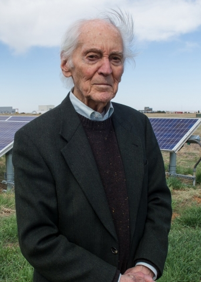
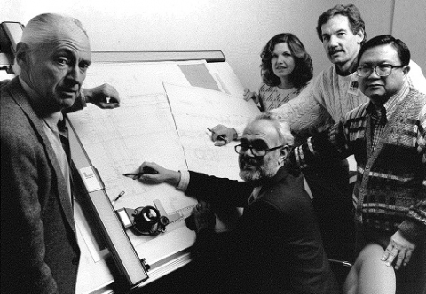

Three afternoons a week, 91-year-old Palmer Carlin comes into the Energy Department's National Wind Technology Center (NWTC) at the National Renewable Energy Laboratory (NREL), and begins having fun. That's where the senior engineer fields questions from the public, often from would-be inventors convinced they have the next big renewable energy breakthrough.
"Across the U.S., there are inventors, students, small businesses, and entrepreneurs with wind-related questions who continuously shower emails and voicemails on all of us here at the wind site," said Carlin, a dapper man with a sweep of silver hair at his jacket collar.
Carlin said he imagines that the typical inventor's scenario begins when a retired machinist goes out to a garage workshop at the suggestion of an exasperated spouse. "Then the guy invents some sort of wind machine and calls me up," he said with a laugh.
He recalled being contacted by a person who was convinced he had a major discovery. After discussing the details of the invention with the modern-day Da Vinci, Carlin paused, and then asked the man if the invention really ran on wind energy. No, the man said. Palmer realized the concept was a perpetual-motion machine. "I said, 'Well, I only talk about things that need wind.'"
This is something he has been doing since the early 1990s, and these exchanges work well for him, as he catalogues each call and files the record. "Having made some technical contributions at the NWTC in the past, I am pleased that a niche has developed for me in which my task is responding to these inquiries that my fellow workers forward to me," he said.
Now, the recent release of the Energy Department's Wind Vision Report has added an important tool in his arsenal. "This will become an excellent information source for me as well as my callers," he said.
Earlier Times and Earlier Tries
The Energy Department report is a far cry from the early days of modern wind energy research, when things were, well, up in the air. Carlin built an early prototype turbine while at the University of Colorado (CU) Boulder as an electrical engineering professor—a gizmo that had magnets around the outside. "It never worked very well," Carlin said simply. Despite his own visions, he never dreamed he would see the giant megawatt-scale turbines towering 90 meters or more—or the widespread acceptance that is chronicled in the Wind Vision Report.
Back in the fall of 1977, he began a three-semester leave from his professorship to help in the creation of what was the Wind Energy Test Site in the buffer zone adjacent to the Rocky Flats Atomic Energy Installation. He remembers that a couple of trailers were the only things on the site, and he would travel with other early pioneers to work with developers of small 10- and 20-kilowatt machines. But Carlin was not merely an observer.
Eventually, the lure of NREL (then known as the Solar Energy Research Institute, or SERI) proved too strong, and he retired from CU and joined SERI in 1986. As the organization pushed for wind's future, Carlin's role was perhaps a bit more complex than he lets on. Colleagues heap praise on him. "We worked together in the 1970s to set up the small wind systems research efforts here at what was then the Rocky Flats Small Wind Systems Test Center," NREL Research Fellow Bob Thresher said.
Thresher also noted that Carlin consulted with the staff on electrical systems analysis. "He authored some of the seminal analysis papers on variable speed technology and collaborated with many small wind companies of that era on the development of variable speed electrical topologies."
Different Times on Campus
Times were different when Carlin was younger, and the nation was in the middle of World War II. After growing up in the 1920s on a prairie farm in Wiley, Colorado, where he tinkered with spare engine parts, he arrived on the CU Boulder campus in 1942 as part of the second class ever of CU's Naval Reserve Officer Training Corps. The group often started the day performing "calijumpic" exercises at dawn before getting cleaned up and dressed in uniform for class. Gas and food were rationed; travel was a luxury because nobody had a car. Carlin's student days weren't focused on wind research, though he was interested in electrical engineering—but it was the overall campus experience that had the most impact.
"It was educational for me, meeting new people from all over," he said. After all, his high school graduation class had only 19 members, including several who were later killed in service. When he graduated with his electrical engineering degree in 1945, the war was ending—but he still had about 18 months of service. He was selected to go to the Navy Yards in New York City. "There I was at Times Square—I'd come from a small town to New York, by way of Boulder."
Eventually, Carlin returned to CU to pursue a master's degree and Ph.D.—but he was fueled by a new interest in physics. He began teaching physics to undergrads. "The atom bomb had happened, so all at once, it was interesting to go into particle physics," he said. And as he pursued his doctoral degree in 1955, he was involved in several of the major historic scientific events of the day.
One was a form of research that required wire. Lots and lots of wire. Carlin was part of a project to monitor seismic activity, which involved setting up three monitors in Boulder, two miles apart, unspooling wire along fence lines and even to a barn. The goal was to detect motion from distant earthquakes or atomic tests. The project successfully noted at least one such U.S. test. Another time, on the evening of October 4, 1957, he heard that the Russians had launched a satellite, so he and his colleagues hurriedly went to test a long-range radar system they were studying. "Sputnik happened to be going over, and we could basically look out into space, and the radar could see it," he said—and noted it was one of the very first sightings that happened "just by accident."
Not everything happened by accident, of course. Carlin's work with the NREL low-speed, direct-coupled wind turbine resulted in several reports and papers, including "Some Analysis of Energy Production from the NWTC Variable Speed Test Bed," which was awarded Best Conference Paper at the 1997 American Society of Mechanical Engineers Wind Energy Symposium.
Through the years, wind energy has also remained a passion. "It's supposed to be the 'in' thing, and it's fun in itself," he said. When asked how long he'll keep coming to work from his Boulder home, Carlin paused, and then said: "I'm having too good a time out here. I'm very pleased I worked at NREL. Everyone here is working because they are doing something they are proud of.
"Whenever I hear people talking about global warming, I feel proud. We're trying to keep the planet's temperature down. Wind is one way to do that," he said.
Learn more about wind research at NREL.
. Her summer internship at INL provided experience at the lab's operating nuclear facilities.")